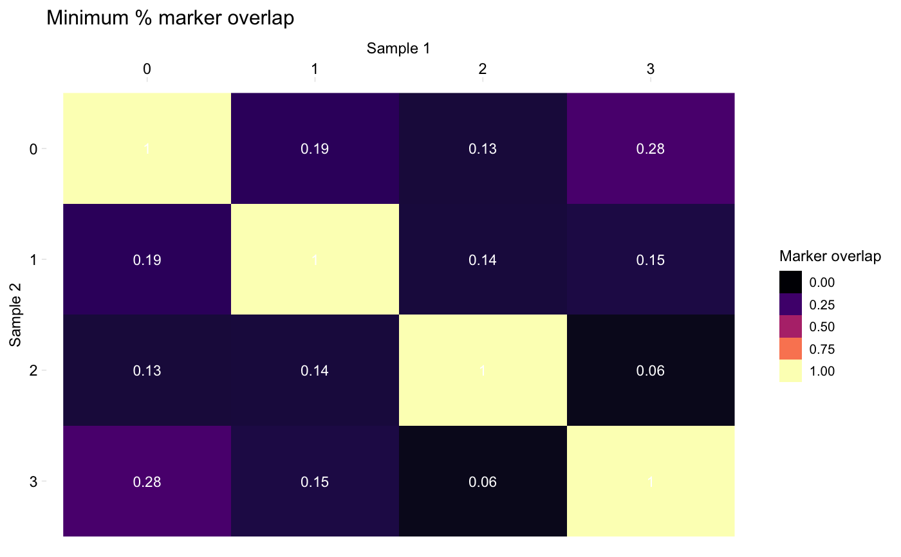

R/comparisons_with_markers.R
heatmapPercentMarkerOverlap.RdGenerate a heatmap where rows correspond to clusters from one dataset and columns correspond to the clusters from the second dataset. The value at [i, j] is overlap of markers between Cluster i in dataset 1 and Cluster j in dataset 2. See Details for how to control how the "overlap" is computed.
heatmapPercentMarkerOverlap(markers1, markers2, mode = "min", sample_names = c("Sample 1", "Sample 2"), palette = NULL, marker_col = "external_gene_name", label_colour = "white")
| markers1 | Data frame of markers for one dataset as returned by Seurat::FindAllMarkers() The clusters for this sample will be plot on the x axis. |
|---|---|
| markers2 | Data frame of markers for second dataset as returned by Seurat::FindAllMarkers() The clusters for this sample will be plot on the y axis. |
| mode | String, one of "s1", "s2", "min", "max", or "both". Controls how to compute the marker overlaps. Default: "min". See Details for more info. |
| sample_names | (Optional) Character vector giving the names or ID of the two samples, used for axis labels, etc. Default: c("Sample 1", "Sample 2") |
| palette | Character vector containing a gradient palette to use.
Default: |
| marker_col | String specifying the column in the markers data frames which specifies the cluster. By default, Seurat calls this "gene"; in the pipeline, it may be called "external_gene_name" (the default here). |
| label_colour | String specifying the colour of value of each cell printed in the heatmap. Default: "white" |
When calculating the shared markers between clusters in two samples, we typically count the number of markers in both lists, but have two options for what to use as the denominator (either the number of markers in sample 1, or the number of markers in sample 2). This function provides a few options for what to plot in the heatmap, controlled by the `mode` argument:
"s1": Plot the percentage of sample 1 markers which are also markers in sample 2
"s2": Plot the percentage of sample 2 markers which are also markers in sample 1
"min": Plot the minimum of the above percentages
"max": Plot the maximum of the above percentages
"both": Plot two heatmaps, one with the percentage of sample 1 markers which are also markers in sample 2, and one the percentage of sample 2 markers which are also markers in sample 1
# Compute the heatmap for one dataset (pbmc) with itself heatmapPercentMarkerOverlap(markers_pbmc, markers_pbmc, marker_col = "gene")